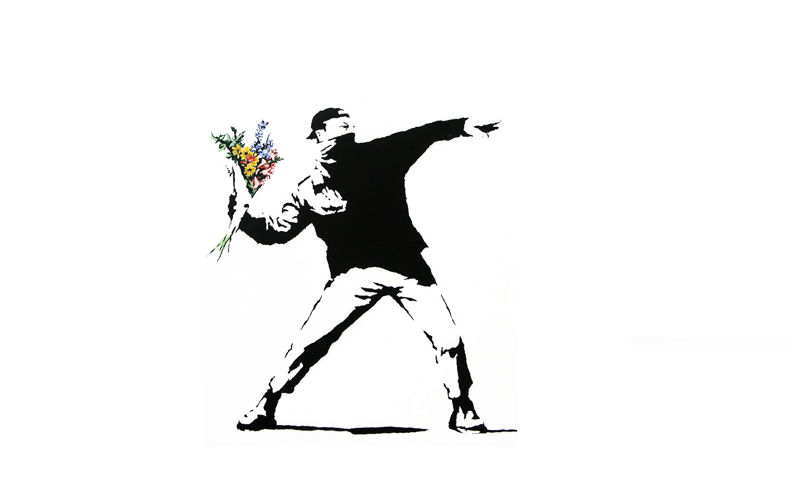

Banksy is a streetartist.
A lot of people in the industry don´t like his work because its too "on the nose", the points he´s making are too obvious.
Using stencils and graffiti spray-cans Banksy quickly creates his work without being seen.
Even tho his pieces do reach a high amount in auctions during biddings, he doesn´t like art being created only for monetary reasons.
Artwork
His art is greatly adored and received a lot of attention in the media during the auction of his piece "Balloon Girl".
The artwork was shredded using blades hidden within the frame of the picture. Everybody at the auction was horrified.
Story
In London he had a confrontation with Robbo, a well-known Graffiti artist of the city. Banksy integrated the oldest and most popular piece of all of London into one of his own works and broke a rule of graffiti.
In graffiti that is a big NOGO because you effectively steal someone else´s piece to make your own better.
This led to "war" between Robbo and Banksy.

“The thing I hate the most about advertising is that it attracts all the bright, creative and ambitious young people, leaving us mainly with the slow and self-obsessed to become our artists.. Modern art is a disaster area. Never in the field of human history has so much been used by so many to say so little.”
― Banksy